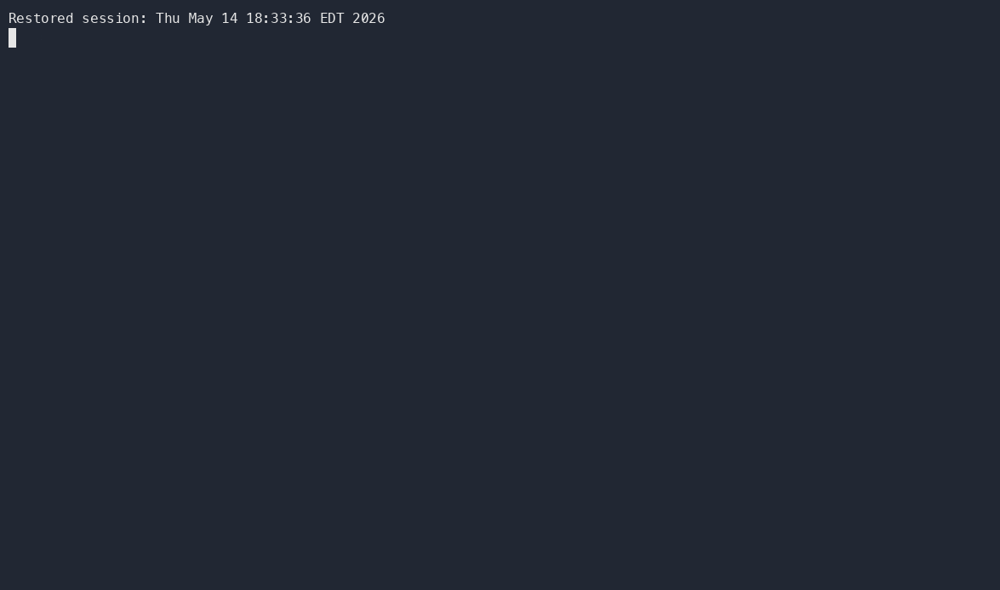
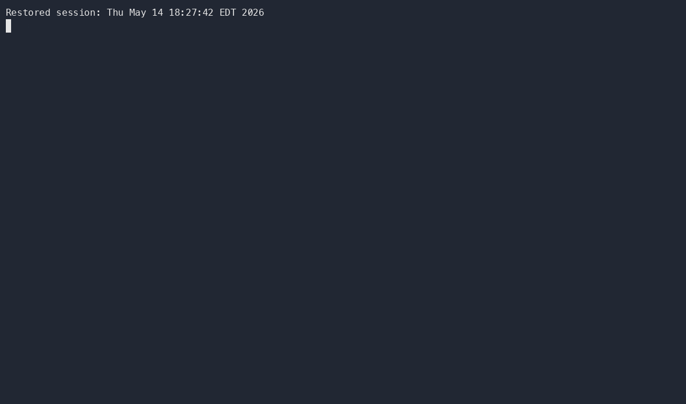

8 Classroom 50
9 Administering Coursework with Classroom 50
GitHub Classroom has historically been the easiest way to distribute coding assignments from a template repository, collect student work, and support autograding. Because the legacy GitHub Classroom service is expected to stop being a reliable path after August 2026, this workflow now uses Classroom 50 as the assignment-management layer.
Classroom 50 keeps the parts that work well for technical courses: GitHub repositories, starter templates, GitHub Actions autograding, roster-based collection, and downloadable submissions. The main difference is operational: teachers manage the classroom through the GitHub CLI instead of a hosted Classroom dashboard.
The command sequence in this chapter follows the upstream Classroom 50 CLI Teacher Guide. Keep the upstream wiki nearby for the full command reference: Installation, CLI Student Guide, Assignment Templates, Autograders, GitHub Integration, gh teacher command reference, gh student command reference, and Troubleshooting.
9.1 Why Classroom 50 Fits This Workflow
The Quarto workflow established earlier generates predictable module folders such as M01, M02, and M03, each with files like M01_A.qmd, M01_Proj.qmd, and M01_Lab1.qmd. Those folders can become starter material for individual or group repositories.
Classroom 50 adds four pieces around that Quarto source:
- a private
<org>/classroom50configuration repository - one directory per classroom, with
classroom.json,assignments.json,students.csv, andscores.json - GitHub teams and org settings that keep student repositories private and limited
- teacher and student CLI commands for accepting, submitting, collecting, and downloading work
In practice, Blackboard Ultra remains the student-facing course shell, Quarto remains the source of truth for instructional material, GitHub remains the code workspace, and Classroom 50 manages the assignment repositories.
9.2 Install the CLI Extensions
Classroom 50 is delivered as two GitHub CLI extensions: gh teacher for instructors and gh student for students.
Install both extensions:
gh extension install foundation50/gh-teacher
gh extension install foundation50/gh-studentVerify that the commands are available:
gh teacher --help
gh student --helpUpdate them before each semester:
gh extension upgrade gh-teacher
gh extension upgrade gh-studentThen authenticate with the scopes Classroom 50 needs:
gh teacher loginThis is different from a plain gh auth login; the teacher command requests the organization and workflow scopes needed for roster invitations, classroom setup, and the config repository workflows.
9.3 One-Time Organization Setup
Create a dedicated teaching organization on GitHub before running the CLI. The CLI does not create the organization for you.
Recommended organization pattern:
- one GitHub organization per course, program, or teaching term
- a short, stable org name such as
ad688-fall-2026 - private assignment repositories for students
- public or in-org private template repositories for starter code
Bootstrap the Classroom 50 config repository:
gh teacher init <org> --dry-run
gh teacher init <org>The dry run is worth doing first. It checks org access, ownership, scopes, plan constraints, and service-token readiness before the command changes the org.
During setup, Classroom 50 creates the private <org>/classroom50 repository, adds workflows for publishing assignment metadata and collecting scores, and applies least-privilege organization settings. It also requires a CLASSROOM50_SERVICE_TOKEN so the score-collection workflow can read student submissions.
After setup, audit the organization:
gh teacher audit <org>Some GitHub member-privilege settings still need to be confirmed in the web UI because GitHub does not expose every setting through the REST API. Treat the audit output as the final setup checklist.
The GitHub Integration page is the best reference for the fine-grained PAT, GitHub Pages, Actions, and REST API details behind this setup.
9.4 Add a Classroom
Create one Classroom 50 classroom for each course section, course shell, or term-level teaching group.
gh teacher classroom add <org> <short-name> --name "<full name>" --term <term>Example:
gh teacher classroom add ad688-fall-2026 web-analytics --name "Web Analytics" --term Fall-2026The <short-name> becomes part of every student repository name, so keep it short, lowercase, and stable. A repository for a student named alice accepting an assignment named module-01-lab would use a name like:
web-analytics-module-01-lab-aliceList classrooms when you need to confirm what has been registered:
gh teacher classroom list <org>9.5 Import the Roster
Classroom 50 stores the intended roster in <org>/classroom50/<classroom>/students.csv. Manage it with the CLI rather than editing the file by hand.
Add one student:
gh teacher roster add <org> <classroom> <username> --first-name <name> --last-name <name> --email <email> --section <section>For ad-hoc organization invitations, the lower-level command is:
gh teacher invite <org> <username>
Bulk import a roster:
gh teacher roster import <org> <classroom> data/classroom50-roster.csvUse a CSV with this header:
username,first_name,last_name,email,sectionList the roster:
gh teacher roster list <org> <classroom>Roster import also sends organization invitations to new students. Students can accept the org invitation directly, or Classroom 50 can handle the pending invitation when they accept their first assignment.
9.6 Prepare Quarto Assignment Templates
For each module assignment, start from the same module structure used throughout the course:
M01/
M01_A.qmd
M01_Lab1.qmd
M01_Lab2.qmd
M01_Proj.qmd
data/
output/Recommended template workflow:
- Generate or update the module files with
scripts/generate_modules.py. - Remove instructor-only files, solutions, keys, hidden notes, and private datasets.
- Keep the student-facing
.qmdinstructions, starter code, lightweight data, and any required environment files. - Push the starter files to a dedicated GitHub repository.
- Mark that repository as a template repository in GitHub settings.
Private templates should live inside the teaching organization. Classroom 50 can grant the classroom team read access to in-org private templates when the assignment is registered. Public templates can live anywhere.
For template repositories, keep the upstream Assignment Templates contract in mind:
README.mdis the student-facing assignment brief..gitignoreis optional and is re-fetched bygh student submit..github/is optional and is re-fetched bygh student submitfor non-autograde workflows..github/workflows/autograde.yamlshould not live in the template; Classroom 50 writes the autograde shim when the student accepts the assignment.- starter code can be a single file, a Quarto module folder, or a complete project skeleton.
9.7 Add Assignments
Register each assignment in Classroom 50 with a short slug, display name, optional template repository, and due date.
gh teacher assignment add <org> <classroom> <slug> --name "<name>" --template <owner>/<repo> --due <ISO-8601>Example for an individual lab:
gh teacher assignment add ad688-fall-2026 web-analytics module-01-lab --name "Module 1 Lab" --template ad688-fall-2026/module-01-lab-template --due 2026-09-15T23:59:00-04:00Template-less assignments are also allowed:
gh teacher assignment add ad688-fall-2026 web-analytics reflection-01 --name "Reflection 1"For group work, register the assignment as a group assignment and include a maximum group size:
gh teacher assignment add ad688-fall-2026 web-analytics project-01 --name "Project 1" --template ad688-fall-2026/project-01-template --mode group --max-group-size 4List registered assignments:
gh teacher assignment list <org> <classroom>Autograding is configured in the Classroom 50 config repository, not inside the starter template. Use the Autograders reference when you need a classroom default autograder, a per-assignment autograder.py, declarative tests, runtime settings, allowed-file checks, or feedback pull requests.
9.8 Connect Assignments to Blackboard Ultra
Blackboard Ultra should point students to the assignment workflow, not replace it.
For each Blackboard assignment item, include:
- the assignment name and due date
- the Classroom 50 classroom and assignment slug
- the template or starter repository purpose
- the required student commands
- the final LMS submission artifact, usually the GitHub repository URL or a short confirmation note
A simple student command block looks like this:
gh student login
gh student accept <org> <classroom> <assignment>
Students complete the work in the generated repository, commit normally, push, and then submit with the Classroom 50 student command required by your assignment instructions.
git add .
git commit -m "Complete assignment"
git push
gh student submitThe CLI Student Guide is the student-facing source to link from Blackboard when students need the full accept, clone, group assignment, and submit workflow.
9.9 Collect Scores and Download Work
Classroom 50 submissions publish release artifacts in each student repository. The <org>/classroom50 config repository includes a collect-scores.yaml workflow that aggregates those release results into scores.json.
Trigger score collection from the shell:
gh workflow run collect-scores.yaml --repo <org>/classroom50Collect for one classroom only:
gh workflow run collect-scores.yaml --repo <org>/classroom50 -f classroom=<classroom>Download the latest submissions for grading, review, or archiving:
gh teacher download <org> <classroom> <assignment>The download command creates a timestamped folder, clones each rostered student’s assignment repository when present, refreshes result.json and results.json, and writes a scores.csv summary.
9.10 Migration Pattern from GitHub Classroom
If you already have a legacy GitHub Classroom course, do not rebuild every template by hand. Use the Classroom 50 migration command as the starting point:
gh teacher classroom migrate --source <id-or-org> --target <org> --dry-run
gh teacher classroom migrate --source <id-or-org> --target <org>The migration path copies starter repositories into the target organization as new templates and commits the classroom configuration. Rosters and historical scores should be treated as separate records: export what you need from the old system, keep an archive, and onboard students into Classroom 50 for the new term.
9.11 Troubleshooting References
When something fails, start with verbose output:
gh student submit -v
gh teacher download -v <org> <classroom> <assignment>Use Troubleshooting for the common cases: missing OAuth scopes, workflow-scope 404s during gh teacher init, private templates that students cannot read, missing .classroom50.yaml, unpublished autograder YAML, empty teacher downloads, and collect-scores runs that report zero readable submissions.